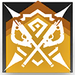

|
|
背水一战丨Last Stand 攻击动作
消耗 1 技力
 本回合结束
本回合结束 |
决战效果：在决斗邀请被接受后发动此战技，则这次攻击动作中的攻击具有优势。
重装-决战者：你擅长与强敌正面对决，在高压对抗中越战越勇，撕裂敌阵。
决战者（Duelist）是重装职业的一个分支。决战者们专注于单点突破与高压对抗的分支，摒弃传统的阵地防守，转而以更具侵略性的姿态介入战场，在最短时间内与最具威胁的敌人展开正面对决。通过精准的牵制与凶狠的反击，决战者将敌人的注意力牢牢锁定在自己身上。
在战场上，决战者往往主动寻找敌方最强大的单位并发起挑战。他们擅长在近距离对峙中占据优势，利用对手的破绽不断累积战斗节奏。决战者以充满压迫感的战斗风格成为战场上对敌人而言难以逾越的屏障、也是指挥官们不容忽视的利刃。
3级：决战重装 Duelist Defender
作为一名决战者，你习得下述特性：
以战养战。每回合仅一次，当你执行攻击动作并以一次近战武器命中生物并造成伤害时，你能够消耗并投掷一枚生命骰并将骰值加入该攻击的其中一次伤害掷骰中，并恢复等于其骰值的生命值。
决战邀请。你可以使用附赠动作挑衅你5尺距离内的一个生物，使得其直到你下回合开始前，攻击你以外的生物时具有劣势。当在这场战斗中被你挑衅过的生物对你发动近战攻击后，那么直到战斗结束前，你发动的战技都可以应用决战效果。
3级：背水一战 Last Stand
你擅长在近距离缠斗中掌握主动权。你习得战技： 背水一战。
|
|
背水一战丨Last Stand 攻击动作
消耗 1 技力
本回合结束 |
7级：鏖战正酣 Relentless Duel
你从无数次近身搏杀中磨砺出了钢铁般的意志与体魄。你习得下述特性：
无可逃避。被你选取为决斗邀请的目标的生物，受影响期间被你的借机攻击命中时，其剩余移动力被降至0。
直觉抵抗。当你使用重装的防御直觉特性为自己重掷豁免时，你可以选择不消耗技力，而是消耗反应作为代替。
10级：血战不休 Unflinching Bloodshed
你的意志已经坚不可摧。你习得下述特性：
决斗专注。当你使用强令对决特性时，你可以立即结束身上的任意魅惑、恐慌或中毒状态。
此外，你习得战技： 血战不休。
|
 |
血战不休丨Unyielding Bloodshed 攻击动作
消耗 3 技力
下回合开始 |
15级：孤勇之志 Lone Valor
你掌握了在高压下维持战斗节奏的技巧。你习得下述特性：
正面交锋。你受到来自触及距离之外生物的攻击、法术或其它效应造成的伤害时，该伤害承受等同你熟练加值的减值。若你陷入受擒、束缚、倒地或失能状态，则此特性不生效。
决胜战意。当有敌人为抵抗你的擒抱或法术而作豁免检定并失败时，你恢复1点技力。你必须完成长休才能再次获益。
18级：决战巅峰 Dueling Paragon
越是濒临绝境，你的反击就越是致命。你习得下述特性：
巅峰战意。你的以战养战特性不再限制每回合只能使用一次。
无可逃避。你使用决战邀请特性时，触及距离内每个敌人都会被选为目标。